ggpointless is an extension of the ggplot2 library providing additional layers.
Installation
You can install ggpointless from CRAN with:
install.packages("ggpointless")
# or devtools::install_github("flrd/ggpointless") for development version
library(ggplot2)
library(ggpointless)
roma <- scico::scico(4, palette = "roma")
theme_set(
theme_minimal() +
theme(
palette.colour.discrete = \(n) scico::scico(n, palette = "roma"),
palette.fill.discrete = \(n) scico::scico(n, palette = "roma"),
palette.fill.continuous = scales::colour_ramp(scico::scico(256, palette = "roma")),
geom = element_geom(fill = roma[4])
)
)What will you get
This package is a collection of geoms, and stats for ggplot2. The following functions are implemented:
-
geom_arch()&stat_arch()– draws an catenary arch -
geom_area_fade()– area plots with a gradient fill -
geom_catenary()&stat_catenary()– draws a catenary curve -
geom_chaikin()&stat_chaikin()– applies Chaikin’s corner cutting algorithm -
geom_fourier()&stat_fourier()– fits a Fourier series tox/yand renders the reconstructed curve -
geom_lexis()&stat_lexis()– draws a Lexis diagram -
geom_point_glow()– adds a radial gradient to your point plots -
geom_pointless()&stat_pointless()– emphasises some observations with points
See vignette("ggpointless") for details and examples.
geom_area_fade
This is purely visual sugar. geom_area_fade() behaves like geom_area() but fills each area with a vertical linear gradient using grid::linearGradient().
# example from geom_area()
df <- data.frame(
g = c("a", "a", "a", "b", "b", "b"),
x = c(1, 3, 5, 2, 4, 6),
y = c(2, 5, 1, 3, 6, 7)
)
ggplot(df, aes(x, y, fill = g)) +
geom_area_fade()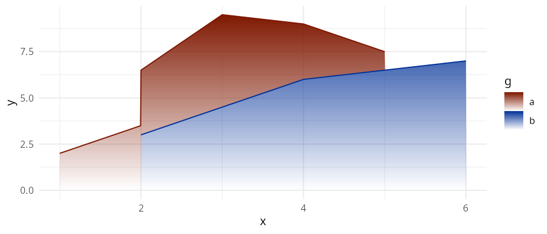
The gradient is anchored at y = 0: fully transparent at the baseline and proportionally opaque at the data values. Opacity scales with absolute distance from zero, so e.g. y = -1 and y = +1 always receive the same alpha.
set.seed(42)
df_fade <- data.frame(
x = seq_len(60),
y = cumsum(rnorm(60, sd = 0.35))
)
df_fade$y <- df_fade$y - mean(df_fade$y)
p <- ggplot(df_fade, aes(x, y))
p + geom_area_fade()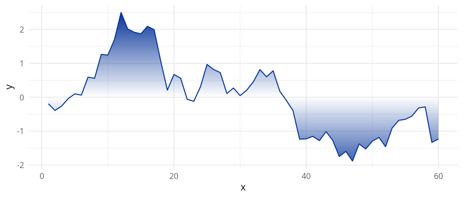
You can control the alpha value the fill fades to using alpha_fade_to argument. Below, instead of fading from full opacity towards full transparency at y = 0 alpha starts at 50% and fades to 10%:
p + geom_area_fade(alpha = .5, alpha_fade_to = .1)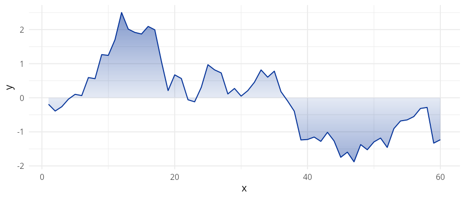
By that logic you can effectively reverse the direction of the gradient like so:
p + geom_area_fade(alpha = 0, alpha_fade_to = 1)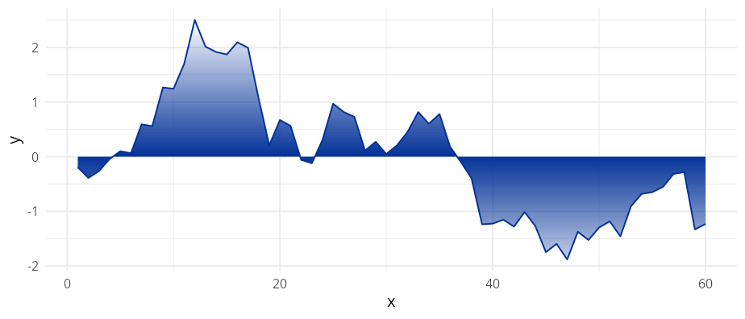
geom_area_fade() supports the orientation argument you know and love from other geom_*s. With orientation = "y", you create a horizontal area chart where the gradient fades from x = 0 toward the data values. You can change the outline colour too.
ggplot(df_fade, aes(y, x)) +
geom_area_fade(orientation = "y", colour = "#333333")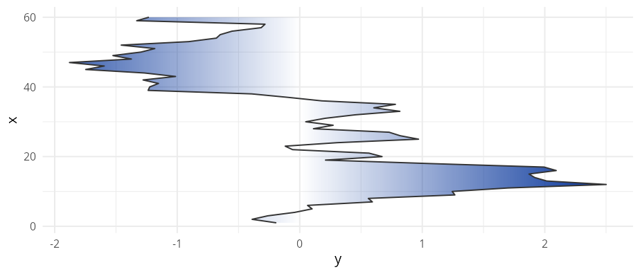
Since ggplot2 version 4.0.0 was released both geom_area() and geom_ribbon() allow a varying fill aesthetic within a group. geom_area_fade() creates a 2D-gradient in such cases which combines the vertical and horizontal gradients.
ggplot(economics, aes(date, unemploy)) +
geom_area_fade(aes(fill = uempmed))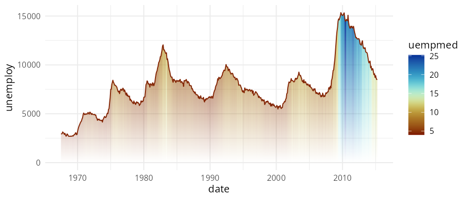
geom_arch
geom_arch() draws a catenary arch (inverted catenary curve) between successive points, mirroring geom_catenary(). The shape is controlled via arch_length or arch_height (vertical rise above the highest endpoint of each segment). By default the arch length is twice the Euclidean distance.
df_arch <- data.frame(x = seq_len(4), y = c(1, 1, 0, 2))
ggplot(df_arch, aes(x, y)) +
geom_arch(arch_height = 0.5) +
geom_point(size = 3)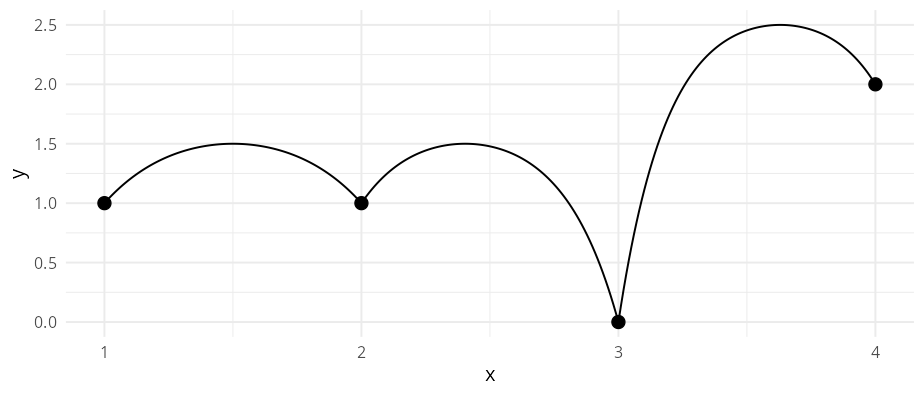
geom_catenary
geom_catenary() draws a flexible curve that simulates a chain or rope hanging loosely between successive points. By default a chain length twice the Euclidean distance between each x/y pair is used. The shape can be controlled via chain_length or sag (vertical drop below the lowest endpoint of each segment).
Idea from: dulnan/catenary-curve
set.seed(5)
df_catenary <- data.frame(x = 1:4, y = sample(4))
ggplot(df_catenary, aes(x, y)) +
geom_catenary() +
geom_point(size = 3)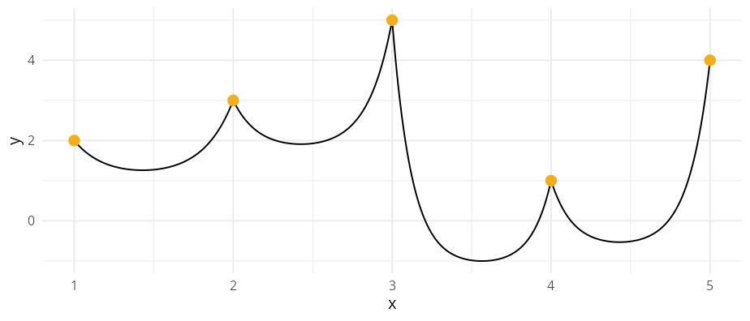
The sag argument can be used to define each segments drop based on the smallest value of each segment. NA keeps the default.
ggplot(df_catenary, aes(x, y)) +
geom_catenary(sag = c(2, 1, NA)) +
geom_point(size = 3)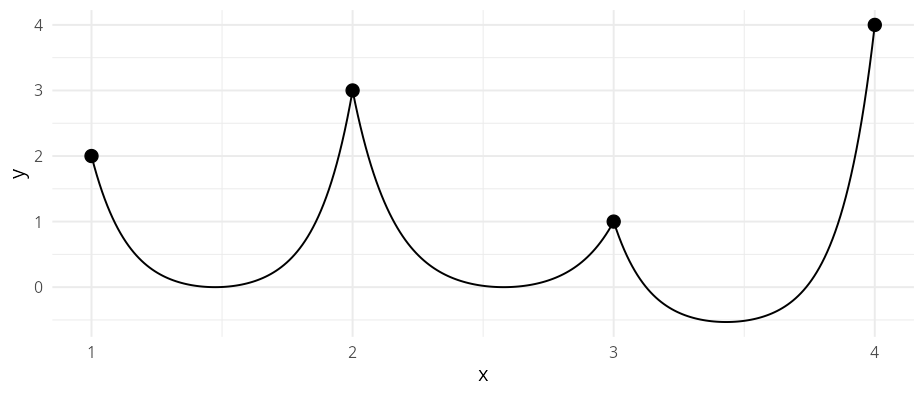
geom_chaikin
geom_chaikin() applies Chaikin’s corner cutting algorithm to turn a ragged path or polygon into a smooth one. The closed argument controls whether the path is treated as a closed polygon. Credit to Farbfetzen / corner_cutting.
lst <- list(
data = list(
whale = data.frame(x = c(.5, 4, 4, 3.5, 2), y = c(.5, 1, 1.5, .5, 3)),
closed_square = data.frame(x = c(0, 0, 1, 1), y = c(2, 3, 3, 2)),
open_triangle = data.frame(x = c(3, 3, 5), y = c(2, 3, 3)),
closed_triangle = data.frame(x = c(3.5, 5, 5), y = c(0, 0, 1.5))
),
color = roma,
closed = c(TRUE, TRUE, FALSE, TRUE)
)
ggplot(mapping = aes(x, y)) +
lapply(lst$data, function(i) {
geom_polygon(data = i, fill = NA, linetype = "12", color = "#333333")
}) +
Map(f = function(data, color, closed) {
geom_chaikin(data = data, color = color, closed = closed)
}, data = lst$data, color = lst$color, closed = lst$closed) +
geom_point(data = data.frame(x = 1.5, y = 1.5)) +
coord_equal()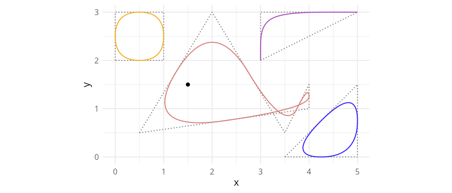
See also the smoothr package.
geom_fourier
geom_fourier() fits a Fourier series (via fft()) to the supplied x/y data and renders the reconstructed smooth curve. By default all harmonics up to the Nyquist limit are used, giving an exact interpolating fit; reducing n_harmonics progressively smooths the result.
The animation below shows how geom_fourier() approximates a square wave as the number of harmonics grows from n = 1 to the Nyquist limit:

An optional detrend argument removes slow non-periodic trends before the transform; detrend accepts one of "lm" or "loess".
set.seed(1)
x_d <- seq(0, 4 * pi, length.out = 100)
df_d <- data.frame(
x = x_d,
y = sin(x_d) + x_d * 0.4 + rnorm(100, sd = 0.2)
)
ggplot(df_d, aes(x, y)) +
geom_point(alpha = 0.35, size = 0.8) +
geom_fourier(
aes(colour = "as is"),
n_harmonics = 3, linetype = "dashed"
) +
geom_fourier(
aes(colour = "detrend = 'lm'"),
n_harmonics = 3, detrend = "lm"
)
geom_lexis
geom_lexis() is a combination of a segment and a point layer. Given a start value and an end value, it draws a 45° line indicating the duration of an event. Required aesthetics are x and xend; y and yend are calculated automatically.
df2 <- data.frame(
key = c("A", "B", "B", "C", "D"),
x = c(0, 1, 6, 5, 6),
xend = c(5, 4, 10, 8, 10)
)
ggplot(df2, aes(x = x, xend = xend, color = key)) +
geom_lexis(aes(linetype = after_stat(type)), size = 2) +
coord_equal() +
scale_x_continuous(breaks = c(df2$x, df2$xend)) +
scale_linetype_identity() +
theme(panel.grid.minor = element_blank())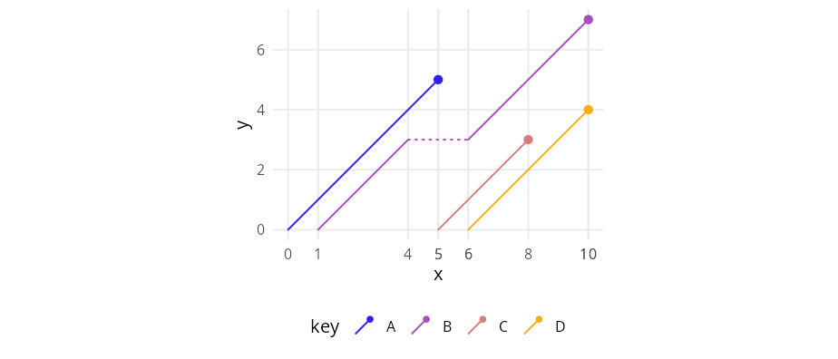
See also the LexisPlotR package.
geom_point_glow
geom_point_glow() is a drop-in replacement for geom_point() that adds a radial gradient glow behind each point using grid::radialGradient(). The glow colour, transparency (glow_alpha), and radius (glow_size) can be set independently of the point itself; by default the glow inherits the point colour.
ggplot(mtcars, aes(wt, mpg, colour = factor(cyl))) +
geom_point_glow(glow_size = 5)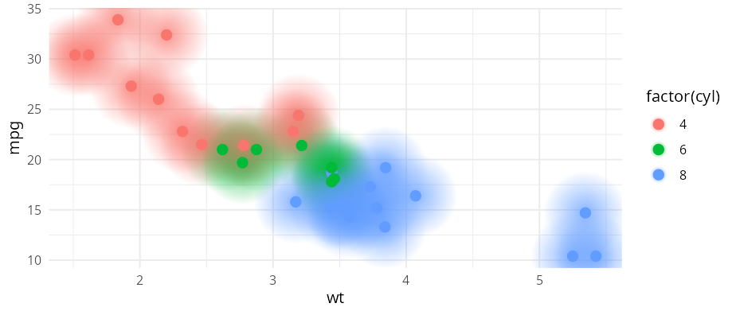
geom_pointless
geom_pointless() lets you highlight observations, by default using a point layer. Hence it behaves like geom_point() but accepts a location argument: "first", "last" (default), "minimum", "maximum", or "all" (shorthand for all four).
x <- seq(-pi, pi, length.out = 500)
y <- outer(x, 1:5, function(x, y) sin(x * y))
df1 <- data.frame(
var1 = x,
var2 = rowSums(y)
)
ggplot(df1, aes(x = var1, y = var2)) +
geom_line() +
geom_pointless(aes(color = after_stat(location)),
location = "all",
size = 3
)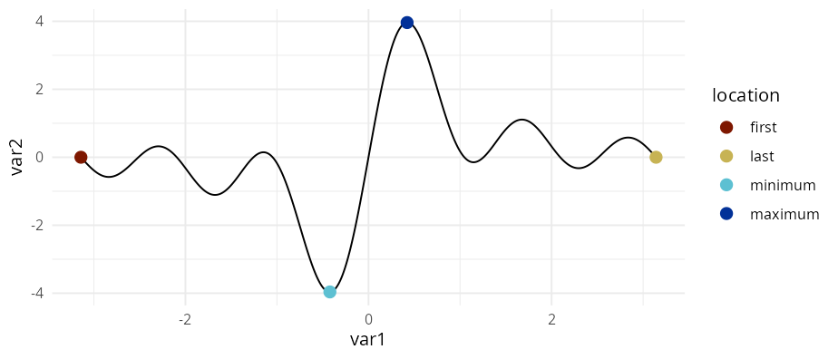
Code of Conduct
Please note that this project is released with a Contributor Code of Conduct. By participating in this project you agree to abide by its terms.